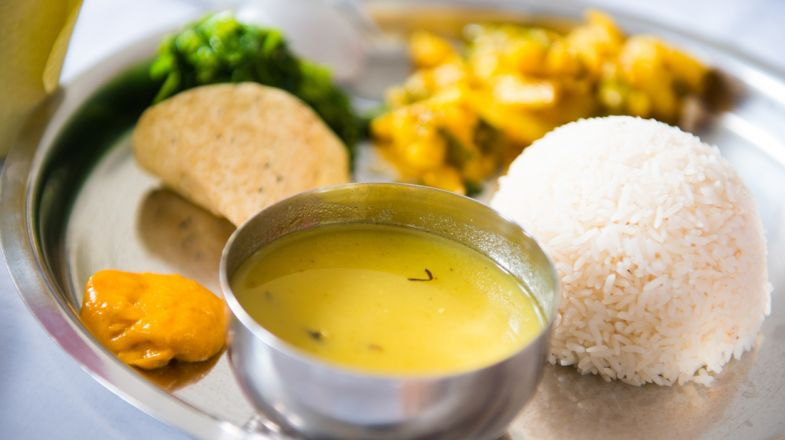

Daal

Description
Nepali-style daal, or dal bhat, is a staple in Nepalese cuisine, a comforting lentil soup enjoyed daily across the country. This version is a simple yet flavorful dish that combines lentils with aromatic spices like turmeric, cumin, and garlic, simmered until smooth and rich. Often made with split yellow lentils (moong daal) or black lentils (masoor daal), the soup is light but nourishing, with a mildly spiced flavor that complements steamed rice and vegetable sides.
Nepali daal is typically tempered with a fragrant tadka or chhonk, where spices are briefly fried in hot oil and poured over the cooked lentils for added aroma and depth. It is often garnished with cilantro, adding a fresh, herby note to the warm, earthy flavors. This versatile dish is easy to make and can be adjusted for thicker or thinner consistency to suit personal preference, offering a comforting, protein-rich accompaniment to any Nepali meal.
Ingredients
- 1 cup split yellow lentils (moong daal) or black lentils (masoor daal)
- 4 cups water
- 1 medium onion, finely chopped
- 2-3 cloves garlic, minced
- 1-inch piece of ginger, minced
- 2 green chilies, slit (optional, adjust to taste)
- 1/2 tsp turmeric powder
- 1 tsp cumin seeds
- 1-2 tbsp oil or ghee (clarified butter)
- Salt, to taste
- Fresh cilantro, chopped, for garnish
Steps
- Rinse the lentils thoroughly and drain the water.
- In a large pot, add the lentils and 4 cups of water. Bring it to a boil over medium heat.
- Once the water is boiling, add turmeric powder and salt. Reduce the heat to a simmer and cook for 20-25 minutes, or until the lentils are soft and fully cooked.
- Meanwhile, heat oil or ghee in a small pan over medium heat.
- Add the cumin seeds and let them sizzle for a few seconds until they release their aroma.
- Add the chopped onions, minced garlic, and ginger. Sauté until the onions are golden brown.
- Optional: Add green chilies to the mixture for extra heat, and cook for another minute.
- Pour this seasoned oil mixture (tadka) into the cooked daal and stir well.
- Simmer the daal for another 5 minutes, adjusting the consistency with more water if needed.
- Turn off the heat, garnish with fresh cilantro, and serve hot with rice.